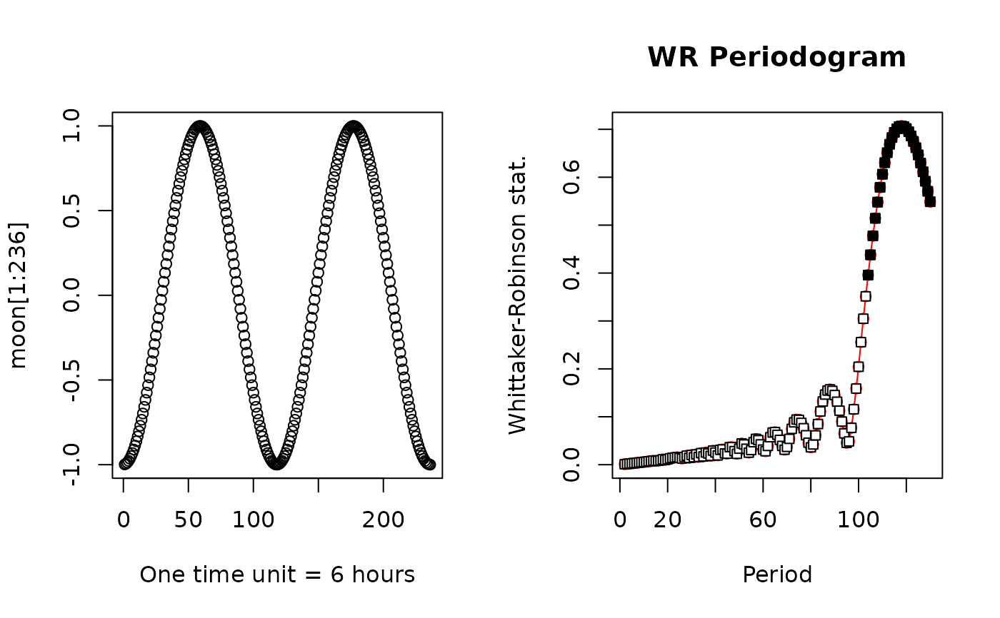
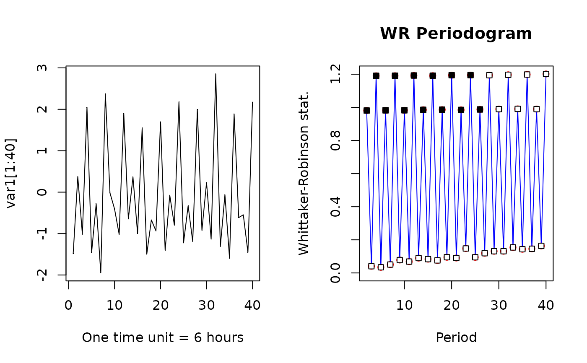
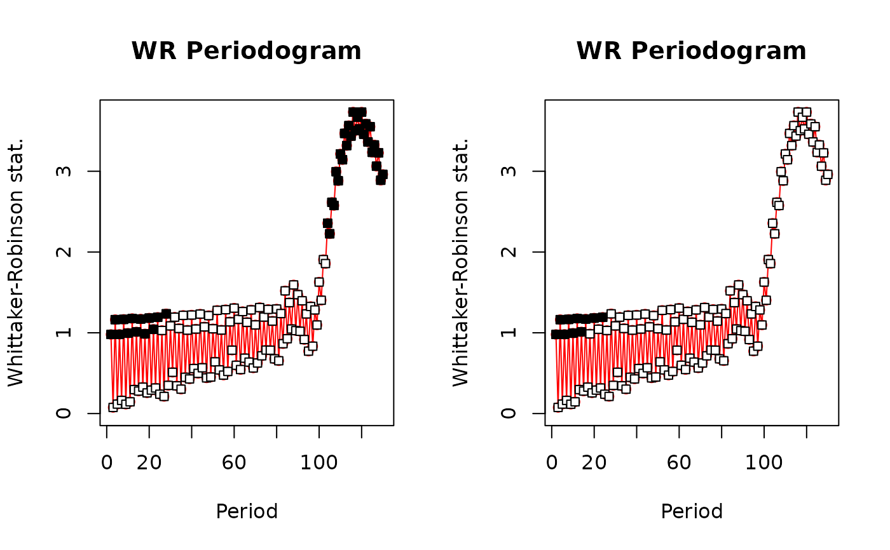
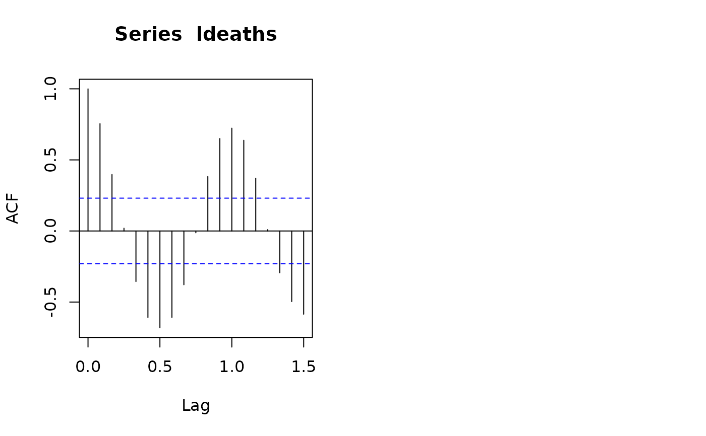

Whittaker-Robinson periodogram for univariate series of quantitative data.
A vector of quantitative values, with class numeric, for
function WRperiodogram, or an output object of WRperiodogram for
function plot.
First period included in the calculation (default: T1=2).
Last period included in the calculation (default: T2=n/2).
Number of permutations for the tests of significance.
List of item numbers that should not be permuted; see Details (default: no items should be excluded from the permutations).
Correction method for multiple testing. Choices are "bonferroni"
and "sidak" (default: mult="bonferroni").
Print the computation time. Useful when planning the
analysis of a long data series with a high number of permutations. Default:
print.time=FALSE.
prog=1 (default): use the original p-values in the plot.
prog=2: use the p-values corrected for multiple testing.
prog=3: progressive correction of the multiple tests.
Significance level for the plot; p-values smaller than or equal
to alpha are represented by black symbols. Default: alpha=0.05.
Colour of the lines between symbols in the graph (default:
line.col="red").
Main title of the plot. Users can write a custom title, in quotes
(default: main="WR Periodogram").
Other graphical arguments passed to this function.
The function produces an object of class WRperio containing a
table with the following columns:
period number;
periodogram statistic;
p-value after permutation test;
p-value corrected for multiple tests, using the Bonferroni or Sidak method;
p-value after progressive correction.
When the p-values cannot be computed because of a very high proportion of missing values in the data, values of 99 are posted in the last three columns of the output table.
The Whittaker-Robinson periodogram (Whittaker and Robinson, 1924) identifies periodic components in a vector of quantitative data. The data series must contain equally-spaced observations (i.e. constant lag) along a transect in space or through time. The vector may contain missing observations, represented by NA, in reasonable amount, e.g. up to a few percent of the total number of observations. The periodogram statistic used in this function is the standard deviation of the means of the columns of the Buys-Ballot table (Enright, 1965). The method is also described in Legendre & Legendre (2012, Section 12.4.1). Missing values (NA) are handled by skipping the NA values when computing the column means of the Buys-Ballot table.
The data must be stationary before computation of the periodogram. Stationarity is violated when there is a trend in the data or when they were obtained under contrasting environmental or experimental conditions. Users should at least test for the presence of a significant linear trend in the data (using linear regression); if a significant trend is identified, it can be removed by computing regression residuals.
The nopermute option allows users to include a list of items numbers
that should not be permuted, whether the observations are NA or zero values.
This option should not be used in routine work. It is intended for special
situations where observations could not be made at some points along the
space or time series because that was impossible. For example, in a spatial
data series along a river, if points fall on emerging rocks or on islands, no
observation of phytoplankton could have been made at those points. For the
permutation test, values at these positions (NA or 0) should not be permuted
with values at points where observations were possible.
The graph produced by the plot function shows the periodogram
statistics and their significance following a permutation test, with periods
in the abscissa. The p-values may be corrected for multiple testing using
either the Bonferroni or the Sidak correction, which can be applied to all
values in the correlogram uniformly, or following a progressive correction.
A progressive correction means that for the first periodogram statistic, the p-value is tested against the alpha significance level without any correction; for the second statistic, the p-value is corrected for 2 simultaneous tests; and so forth until the k-th statistic, where the p-value is corrected for k simultaneous tests. This approach solves the problem of "where to stop interpreting a periodogram"; one goes on as long as significant values emerge, considering the fact that the tests become progressively more conservative.
In the Whittaker-Robinson periodogram, harmonics of a basic period are often found to be also significant.
The permutation tests, which can take a bit of time in very large jobs, can
be interrupted by issuing an Escape command. One can also click the
STOP button at the top of the R console.
Enright, J. T. 1965. The search for rhythmicity in biological time-series. Journal of Theoretical Biology 8: 426-468.
Legand, M. 1958. Variations diurnes du zooplancton autour de la Nouvelle-Calédonie. O.R.S.T.O.M., Inst. Fr. Océanie Sect. Océanogr. Rapp. Sci. (6): 1-42.
Legendre, P. and L. Legendre. 2012. Numerical ecology, 3rd English edition. Elsevier Science BV, Amsterdam.
Sarrazin, J., D. Cuvelier, L. Peton, P. Legendre and P. M. Sarradin. 2014. High-resolution dynamics of a deep-sea hydrothermal mussel assemblage monitored by the EMSO-Açores MoMAR observatory. Deep-Sea Research I 90: 62-75. (Recent application in oceanography)
Whittaker, E. T. and G. Robinson. 1924. The calculus of observations - A treatise on numerical mathematics. Blackie & Son, London.
### 1. Numerical example from Subsection 12.4.1 of Legendre and Legendre (2012)
test.vec <- c(2,2,4,7,10,5,2,5,8,4,1,2,5,9,6,3)
# Periodogram with permutation tests of significance
res <- WRperiodogram(test.vec)
plot(res) # Plot the periodogram
#####
### 2. Simulated data
# Generate a data series with periodic component using Legand's (1958) equation.
# Ref. Legendre and Legendre (2012, eq. 12.8, p. 753)
# x = time points, T = generated period, c = shift of curve, left (+) or right (-)
periodic.component <- function(x,T,c){cos((2*pi/T)*(x+c))}
n <- 500 # corresponds to 125 days with 4 observations per day
# Generate a lunar cycle, 29.5 days (T=118)
moon <- periodic.component(1:n, 118, 59)
# Generate a circadian cycle (T=4)
daily <- periodic.component(1:n, 4, 0)
# Generate an approximate tidal cycle (T=2)
# A real tidal signal would have a period of 12.42 h
tide <- periodic.component(1:n, 2, 0)
# Periodogram of the lunar component only
res.moon.250 <- WRperiodogram(moon, nperm=0) # T1=2, T2=n/2=250; no test
res.moon.130 <- WRperiodogram(moon, T2=130, nperm=499)
oldpar <- par(mfrow=c(1,2))
# Plot 2 moon cycles, n = 118*2 = 236 points
plot(moon[1:236], xlab="One time unit = 6 hours")
plot(res.moon.130, prog=1) # Plot the periodogram

#####
# Add the daily and tidal components, plus a random normal error. With daily (T=4) and
# tide (T=2), period 4 and its harmonics should have a higher W statistic than period 2
var1 <- daily + tide + rnorm(n, 0, 0.5)
# Plot a portion (40 points) of the data series
# Two periodic components identifiable. Tide (T=2) reinforces the daily signal (T=4)
par(mfrow=c(1,2))
plot(var1[1:40], pch=".", cex=1, xlab="One time unit = 6 hours")
lines(var1[1:40])
# Periodogram of 'var'
res.var1 <- WRperiodogram(var1, T2=40, nperm=499)
plot(res.var1, prog=3, line.col="blue") # Plot the periodogram

# The progressive correction for multiple tests (prog=3) was used in the periodogram.
#####
# Add the three components, plus a random normal error term
# to show that the WRperiodogram can test several periodic components at the same time.
# (5*moon) makes the lunar periods stronger than the daily and tidal periods
var2 <- 5*moon + daily + tide + rnorm(n, 0, 0.5)
# Plot a portion (150 points) of the data series
# The three periodic components are identifiable
par(mfrow=c(1,2))
plot(var2[1:150], pch=".", cex=1, xlab="One time unit = 6 hours")
lines(var2[1:150])
# Periodogram of 'var'
res.var2 <- WRperiodogram(var2, T2=130, nperm=499)
plot(res.var2, prog=1, line.col="blue") # Plot the periodogram
# Find the position of the maximum W statistic value in this periodogram
(which(res.var2[,2] == max(res.var2[,2])) -1)
#> [1] 118
# "-1" correction at the end of the previous line: the first computed period is T=2,
# so period #118 is on line #117 of file res.var2
#####
# Illustration that the WR periodogram can handle missing values:
# Replace 10% of the 500 data by NA
select <- sort(sample(1:500)[1:50])
var.na <- var2
var.na[select] <- NA
res.var.na <- WRperiodogram(var.na, T2=130, nperm=499)
# Plot the periodogram with no correction for multiple tests
plot(res.var.na, prog=1)
# Plot periodogram again with progressive correction for multiple tests
plot(res.var.na, prog=3)

#####
### 3. Data used in the examples of the documentation file of function afc() of {stats}
# Data file "ldeaths"; time series, 6 years x 12 months of deaths in UK hospitals
# First, examine the data file ldeaths. Then:
ld.res.perio <- WRperiodogram(ldeaths, nperm=499)
# Plot the periodogram with two types of corrections for multiple tests
par(mfrow=c(1,2))
plot(ld.res.perio, prog=1) # No correction for multiple testing
plot(ld.res.perio, prog=3) # Progressive correction for multiple tests
# The yearly cycle and harmonics are significant
# Compare the results of afc() to those of WRperiodogram above
acf(ldeaths) # lag=1.0 is one year; see ?acf
par(oldpar)
